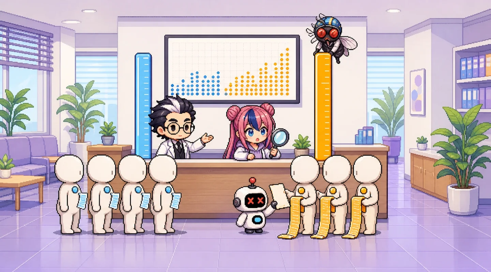

과제 문항 2Assignment 2
무엇을 내야 하는지 먼저 확인합니다.
흡연자에 대해서만 예측할 때의 오차
- 문항 1의 교차검증 예측값(out-of-fold)을 이용해 실제 smoker = yes 인 사람만을 대상으로 RMSE · MAE · MAPE 를 산출
- 같은 방식으로 smoker = no 인 사람만을 대상으로 한 오차도 산출해 두 값을 나란히 비교. 보험료 상위 10% 구간만의 오차도 함께 제시
- 각 값이 어떤 조건부 기대값인지 정의. 예: E[|y − ŷ| | smoker = yes]
- 그룹별 MSE 와 문항 1의 전체 MSE 가 어떤 관계인지(그룹 비율을 가중치로 한 가중평균) 수식과 수치로 확인
- 예측이 체계적으로 높거나 낮은지 보기 위해 그룹별 평균 잔차(편향)도 함께 제시
이 편은 1편이 저장한 검증 예측(OOF)을 씁니다. 1,337명 모두 자기가 검증 fold 에 있을 때, 즉 학습에 쓰이지 않았을 때 받은 예측입니다. 그래서 그룹을 나눠 다시 재도 누수가 없습니다.
1부 1편 복습모두에게 평균만: 평균의 함정
평균만 말하면 합계는 맞는데 사람마다 틀린다 — 오늘은 그 ‘사람마다’를 그룹으로 나눕니다.
그룹별로 다시 재기Error by group
모델을 바꿔 가며 네 그룹의 오차를 비교하세요.
그룹별 MAE (세로선 = 같은 그룹의 기준선)
그룹별 평균 잔차 (예측 − 실제)
0 보다 왼쪽(주황) = 평균적으로 적게 잡음, 오른쪽(파랑) = 많이 잡음.


모델을 골라 주세요.
삐빅, 그룹별로 다시 채점 중…
고액 고객을 크게 적게 잡았어요!
모두에게 평균만… 흡연자는 거의 다 적게 잡혀요.
삐빅! 흡연자 오차도 작아요.
MAPE(평균 절대 백분율 오차) = mean(|예측 − 실제| ÷ 실제). 이 데이터는 의료비가 0원인 사람이 없어서(최소 $1,122) 계산할 수 있습니다. 0원이 있는 데이터(예: 청구가 없는 가입자가 섞인 데이터)에서는 나누기를 할 수 없어 쓰지 않습니다. 또 금액이 작은 사람의 오차를 크게 부풀리므로 보조 지표로만 씁니다.
이 숫자들은 무엇의 기대값인가Conditional expectations
과제가 요구하는 정의를 수식으로.
흡연자만 MAE
E[ |y − ŷ| | smoker = yes ]
“흡연자라는 조건 아래에서” 한 사람당 오차 크기의 기대값. 표본 추정 = 흡연자 274명의 |오차| 평균.
비흡연자만 MAE
E[ |y − ŷ| | smoker = no ]
비흡연자 1,063명의 |오차| 평균.
고액 상위 10%만 MAE
E[ |y − ŷ| | y ≥ q0.9 ]
실제 금액이 상위 10%($34,833 이상)인 134명. 정답 y 로 고른 그룹이라 미리 알 수 없는 그룹입니다(3편 문제점).
편향 (평균 잔차)
E[ ŷ − y | 그룹 ]
부호가 살아 있는 오차의 평균. 음수 = 체계적으로 적게 잡음(과소 추정). MAE 는 이 방향을 숨깁니다.
RMSE = √E[(y − ŷ)² | 그룹], MAPE = E[|y − ŷ| ÷ y | 그룹]. 전체 MAE 는 E[|y − ŷ|], 조건 없는 기대값입니다.
전체 MSE = 그룹 MSE 의 가중평균Law of total expectation
좌변과 우변이 정말 같은지 숫자로 확인합니다.
MSE전체 = P(흡연) × MSE흡연자 + P(비흡연) × MSE비흡연자
전체 오차는 그룹 오차를 그룹 비율로 가중평균한 것입니다(전체 기대값의 법칙). 같은 식이 MAE 에도 그대로 성립합니다. 흡연자는 20.5%뿐이지만 오차가 크면 전체 오차의 큰 몫을 차지합니다.
| 모델 | 전체 MSE (좌변) | 흡연 비율 × 흡연자 MSE | 비흡연 비율 × 비흡연자 MSE | 합 (우변) | 전체 오차 중 흡연자 몫 |
|---|---|---|---|---|---|
| 기준선 | 146,562,297 | 0.2049 × 485,121,110 | 0.7951 × 59,295,021 | 146,562,297 | 67.8% |
| 선형 회귀 | 37,072,616 | 0.2049 × 84,131,037 | 0.7951 × 24,942,787 | 37,072,616 | 46.5% |
| 선형 회귀 · log | 71,777,563 | 0.2049 × 264,150,343 | 0.7951 × 22,191,353 | 71,777,563 | 75.4% |
| 그래디언트 부스팅 | 20,464,387 | 0.2049 × 16,573,597 | 0.7951 × 21,467,281 | 20,464,387 | 16.6% |
| 그래디언트 부스팅 · log | 21,048,610 | 0.2049 × 19,358,252 | 0.7951 × 21,484,319 | 21,048,610 | 18.8% |
MSE 는 달러² 단위라 숫자가 큽니다. 좌변과 우변이 반올림까지 같습니다.

(손바닥을 든다) …선형 회귀는 사람 수로는 20%인 흡연자가 오차의 46.5%를 만듭니다. 그래디언트 부스팅에서는 16.6%. 전체 숫자 하나로는 이 차이가 보이지 않습니다.
흡연자 MAE 는 fold 마다 얼마나 흔들릴까Small groups wobble
fold 하나의 흡연자는 약 55명뿐입니다.
| 모델 | fold 1 | fold 2 | fold 3 | fold 4 | fold 5 | 최소 ~ 최대 |
|---|---|---|---|---|---|---|
| 선형 회귀 | $8,549 | $8,699 | $8,660 | $8,938 | $8,471 | $8,471 ~ $8,938 |
| 그래디언트 부스팅 | $1,824 | $2,373 | $2,152 | $2,101 | $2,095 | $1,824 ~ $2,373 |
| fold 의 흡연자 수 | 52명 | 50명 | 57명 | 55명 | 60명 | 50 ~ 60명 |
그래디언트 부스팅의 흡연자 MAE 는 fold 마다 $1,824 에서 $2,373 까지 움직입니다. 고액 상위 10%는 fold 당 27명 안팎이라 더 흔들립니다. 그래서 작은 그룹의 숫자는 범위(신뢰구간)와 함께 써야 합니다 — 3편의 첫 번째 개선입니다.
보고서 답안 틀Answer template
이 편의 결과를 과제 답안 형식으로.
표 2. 그룹별 오차 (5-Fold 검증 예측, 달러)
| 모델 | 그룹 | n | MAE | RMSE | MAPE | 평균 잔차 (예측 − 실제) |
|---|---|---|---|---|---|---|
| [모델 1] | 흡연자만 | [ ] | [ ] | [ ] | [ ] | [ ] |
| 비흡연자만 | [ ] | [ ] | [ ] | [ ] | [ ] | |
| 고액 상위 10%만 | [ ] | [ ] | [ ] | [ ] | [ ] | |
| [모델 2] | 흡연자만 | [ ] | [ ] | [ ] | [ ] | [ ] |
| 비흡연자만 | [ ] | [ ] | [ ] | [ ] | [ ] | |
| 고액 상위 10%만 | [ ] | [ ] | [ ] | [ ] | [ ] |
정의 틀. “흡연자만 MAE 는 E[ [ ] | smoker = yes ] 의 표본 추정이다. 고액 상위 10% 는 [ ](예측 전에 알 수 있나/없나)로 고른 그룹이다.”
관계 틀. “전체 MSE [ ] = [ ] × [ ] + [ ] × [ ] 로, 전체 오차는 그룹 오차를 그룹 비율로 가중평균한 값이다. 흡연자는 전체의 [ ]%지만 전체 오차의 [ ]%를 만든다.”
서술 틀. “[모델 1]은 흡연자에게 평균 [ ]달러, 비흡연자에게 [ ]달러 틀려 [ ]배 차이가 난다. 고액 상위 10%의 평균 잔차는 [ ]로, [ ](적게/많이) 잡는 경향이 있다.”
확인 문제Check
정답을 고르면 해설이 나옵니다.
Q1. 선형 회귀의 전체 MAE 는 $4,206 입니다. 흡연자만 MAE 는?
Q2. 선형 회귀의 고액 상위 10% 평균 잔차가 $-8,412, 과소 추정 비율이 100% 입니다. 무슨 뜻일까요?
Q3. 전체 MSE 와 그룹별 MSE 의 관계로 맞는 것은?
Q4. ‘고액 상위 10%만 MAE’를 모델 성능으로 보고할 때 조심할 점은?
실무로 잇기From page to Colab
이 페이지의 숫자를 만든 코드.
e2.py 는 cross_val_predict 로 1편과 같은 fold 의 검증 예측을 만든 뒤 groupby 로 그룹별 MAE · 편향 · MAPE 를 냅니다. [다이얼] GROUP_COLUMN 을 "sex" 나 "region" 으로 바꾸면 공정성 점검도 됩니다. f2.py 는 1편이 저장한 data/oof_predictions.csv 를 읽어 모든 모델 × 타깃에 대해 계산합니다.
실행 결과 보기 (정식 코드 f2.py 를 실제로 실행한 출력)
people: all=1337 smoker=274 non-smoker=1063 top10%=134 (charges >= 34833)
top10% that are smokers: 131
[group = all]
n MAE RMSE MAPE bias under_rate
model target
Baseline raw 1337 9092.0 12106.0 1.515 0.0 0.314
Linear raw 1337 4206.0 6089.0 0.425 5.0 0.371
log 1337 4281.0 8472.0 0.268 -325.0 0.369
Decision Tree raw 1337 2682.0 4660.0 0.307 -62.0 0.251
log 1337 2399.0 4711.0 0.207 -542.0 0.343
Gradient Boosting raw 1337 2448.0 4524.0 0.282 -13.0 0.193
log 1337 2135.0 4588.0 0.169 -659.0 0.262
[group = smoker]
n MAE RMSE MAPE bias under_rate
model target
Baseline raw 274 18773.0 22025.0 0.520 -18770.0 0.996
Linear raw 274 8660.0 9172.0 0.322 6.0 0.547
log 274 12965.0 16253.0 0.419 2092.0 0.464
Decision Tree raw 274 3023.0 4647.0 0.103 -181.0 0.453
log 274 3061.0 4824.0 0.103 -46.0 0.423
Gradient Boosting raw 274 2107.0 4071.0 0.072 -128.0 0.343
log 274 2526.0 4400.0 0.081 -764.0 0.507
[group = non-smoker]
n MAE RMSE MAPE bias under_rate
model target
Baseline raw 1063 6597.0 7700.0 1.771 4838.0 0.138
Linear raw 1063 3058.0 4994.0 0.451 5.0 0.325
log 1063 2043.0 4711.0 0.229 -948.0 0.345
Decision Tree raw 1063 2595.0 4663.0 0.359 -31.0 0.198
log 1063 2229.0 4681.0 0.234 -670.0 0.323
Gradient Boosting raw 1063 2536.0 4633.0 0.337 17.0 0.154
log 1063 2035.0 4635.0 0.192 -631.0 0.198
[group = top 10%]
n MAE RMSE MAPE bias under_rate
model target
Baseline raw 134 29099.0 29611.0 0.682 -29099.0 1.000
Linear raw 134 8412.0 9503.0 0.196 -8412.0 1.000
log 134 13252.0 15954.0 0.315 -3729.0 0.634
Decision Tree raw 134 3871.0 6142.0 0.091 -1694.0 0.537
log 134 3999.0 6326.0 0.094 -1285.0 0.463
Gradient Boosting raw 134 2877.0 5828.0 0.067 -1604.0 0.485
log 134 3628.0 6322.0 0.085 -2278.0 0.597
[MSE decomposition] MSE_all = w_smoker*MSE_smoker + w_non*MSE_non
MSE_all w_smoker MSE_smoker w_non MSE_non weighted_sum smoker_share_of_error
model
Baseline|raw 146562297.0 0.2049 485121110.0 0.7951 59295021.0 146562297.0 0.678
Linear|raw 37072616.0 0.2049 84131037.0 0.7951 24942787.0 37072616.0 0.465
Gradient Boosting|raw 20464387.0 0.2049 16573597.0 0.7951 21467281.0 20464387.0 0.166
Gradient Boosting|log 21048610.0 0.2049 19358252.0 0.7951 21484319.0 21048610.0 0.188
[smoker MAE per fold]
fold 1 2 3 4 5 min max
model
Gradient Boosting|raw 1824.0 2373.0 2152.0 2101.0 2095.0 1824.0 2373.0
Linear|raw 8549.0 8699.0 8660.0 8938.0 8471.0 8471.0 8938.0
smokers per fold: [52, 50, 57, 55, 60]AI와 함께 더 공부하기AI tutor prompt
ChatGPT·Claude·Gemini 등에 그대로 붙여 넣으세요. [ ] 안만 바꾸면 됩니다.
# 역할 당신은 보험 데이터 분석을 가르치는 친절한 튜터입니다. 저는 「AI(인공지능) x 비즈니스 #1 인슈어테크_04_회귀모델_실전」 2부 2편(과제 문항 2) 「흡연자만, 비흡연자만, 고액만: 그룹별 오차」을 공부하고 있습니다. # 배경 - 데이터: 공개 학습용 건강보험 의료비 데이터 1,338행 (https://raw.githubusercontent.com/fintech-data/Revolution/main/data/insurance.csv) - 열: age(나이) · sex(성별) · bmi(체질량지수) · children(자녀 수) · smoker(흡연 여부) · region(미국 내 지역 4곳) · charges(1년 의료비 청구 금액, 달러 = 맞힐 대상) - 완전히 같은 행 1건을 빼고 1,337행을 씁니다. 목표값 charges 는 자르거나 고치지 않습니다(고액은 오류가 아니라 꼬리). - 검증은 charges 10분위로 층화한 StratifiedKFold(n_splits=5, shuffle=True, random_state=42) 입니다. fold별 점수 5개와 평균 ± 표준편차를 냅니다. - 기준선: 모두에게 학습 데이터 평균만 답하기 (R² = 0 근처) - 내 수준: [예: 파이썬은 조금, 통계는 처음] # 해 줄 일 1. 5-Fold 검증 예측(cross_val_predict)으로 흡연자만 · 비흡연자만 · 고액 상위 10%만의 MAE · RMSE · MAPE · 평균 잔차를 계산하게 도와 주세요. 2. 제 숫자로 전체 MSE = 그룹 비율 × 그룹 MSE 의 합이 맞는지 확인하는 코드를 보여 주세요. 3. 각 숫자를 조건부 기대값 기호로 쓰는 법을 알려 주세요. 4. 고액 상위 10% 그룹을 성능으로 보고할 때의 함정을 질문으로 짚어 주세요. # 반드시 지킬 것 - 기호나 약어(MAE, RMSE, R² 등)는 처음 나올 때 한 줄로 설명하기 - 데이터 증강(합성 행 · 행 복제 · 정답에 잡음 넣기)은 쓰지 않기 - 전처리(표준화 · 인코딩)는 Pipeline 안에서 학습 데이터에만 fit (데이터 누수 금지) - 여유분 · 하이퍼파라미터는 학습 데이터의 교차검증으로만 고르기 (시험 데이터는 마지막에 한 번만) - R² 하나만 보고하지 않기: MAE · RMSE · 고액(상위 10%) MAE · 과소 추정 비율을 기준선과 함께 - 로그 변환을 썼다면 예측을 달러로 되돌려 평가하기 - 코드는 Google Colab 에서 바로 실행되게, random_state=42 고정, 내가 바꿀 줄에는 # [변경] 주석 내 결과: [숫자 붙여 넣기 — fold별 점수와 평균 ± 표준편차] 내가 쓴 문장: [붙여 넣기] # 답변 형식 1) 내 숫자를 기준선과 비교해 해석 2) 내 문장에서 틀리거나 과장된 곳 3) 답을 바로 주기 전에, 내가 스스로 확인할 질문 3개
용어 사전Glossary
비유로 먼저, 뜻은 그다음.
- 조건부 기대값
- ‘~일 때’의 평균. E[|y − ŷ| | smoker = yes] = 흡연자라는 조건 아래 오차 크기의 평균.
- 검증 예측 (OOF)
- 학습에 안 쓴 예측. 각 사람이 검증 fold 에 있을 때 받은 예측. 그룹을 다시 나눠도 누수가 없다.
- 평균 잔차 (편향)
- 방향이 있는 오차. E[ŷ − y]. 음수 = 적게 잡음(과소 추정, 주황).
- MAPE
- 몇 % 틀렸나. mean(|오차| ÷ 실제). 0원이 있으면 못 쓴다. 작은 금액의 오차를 부풀린다.
- 전체 기대값의 법칙
- 부분의 가중평균이 전체. MSE 전체 = Σ 그룹 비율 × 그룹 MSE.
- 과소 추정 비율
- 적게 잡은 사람의 비율. mean(ŷ < y). 보험사에는 부족분이 생기는 쪽.
- 사후 그룹
- 답을 보고 나눈 그룹. 고액 상위 10% 처럼 실제 금액으로 고른 그룹. 가입 시점에는 모른다.
글 · 안상선 ((주)M-Robo 대표)
(주)M-Robo 대표. 금융·보험 데이터와 AI를 현장에서 쓰는 방법을, 버튼만 눌러 따라 할 수 있는 교재로 만듭니다.
수고하셨습니다!

- 선형 회귀 MAE: 전체 $4,206 · 흡연자 $8,660 · 비흡연자 $3,058 · 고액 10% $8,412 (고액 134명 전원 과소 추정)
- 전체 MSE = 그룹 비율 × 그룹 MSE 의 합. 흡연자 20%가 선형 회귀 오차의 46.5%
- MAE 는 방향을 숨긴다 — 평균 잔차 · 과소 추정 비율을 함께. 작은 그룹은 fold 마다 흔들린다
평균 하나 뒤에 이렇게 다른 그룹들이 숨어 있었다니. 머니로보는 할인 행사가 아니었다고 반성 중이에요.
그럼 이 숫자를 그대로 성능이라고 써도 돼요? 흡연자 274명이면 제 친척 수보다 적은데요. 아, 저희는 일주일에 몇백 마리씩 태어나요.